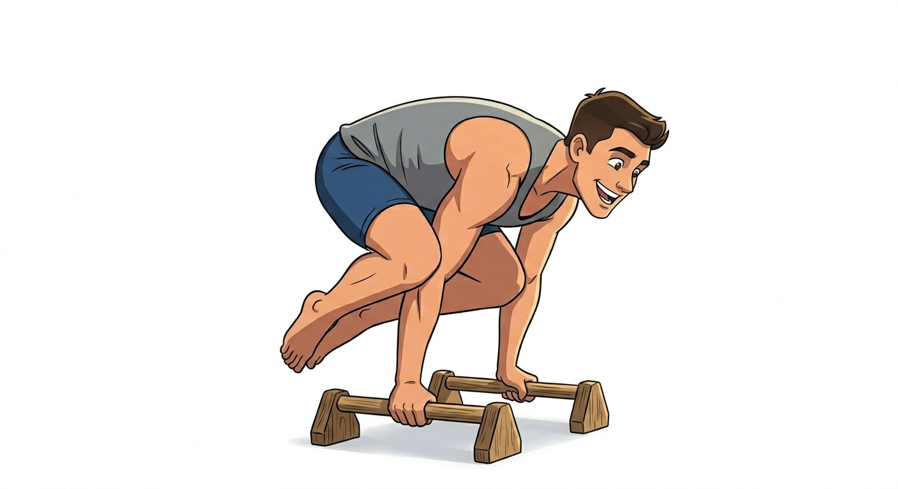
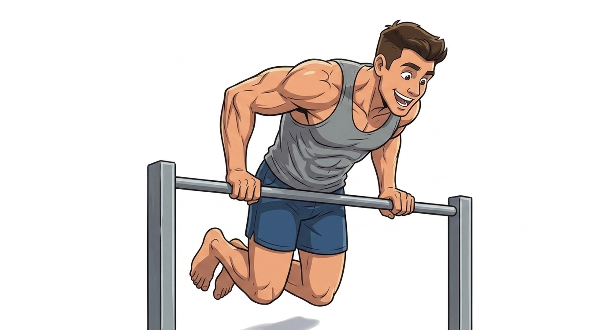
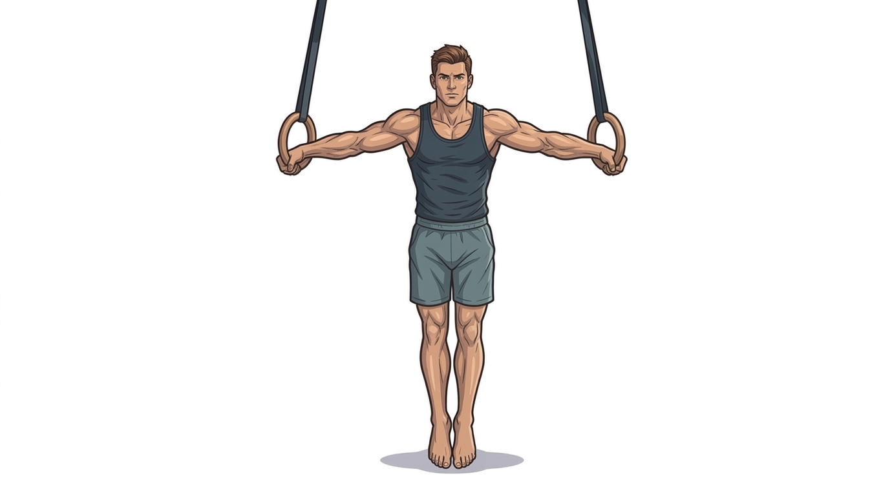

🌿 Beginner
Welcome to your first beginner skill!
Frog Stand 🐸

2-3 weeks
beginner calisthenics balance skill that strengthens the shoulders, triceps, and core. It involves balancing on hands with knees resting on elbows
-
🦵 Deep Squat Position (Preparation):
Squat down and place hands on the floor shoulder-width apart, fingers forward and spread wide -
🦿 Knee-to-Elbow Touch:
Place knees on the outside of the upper triceps (not directly on the elbows) -
⚖️ Weight Shift (Toe Taps):
Lean forward, shifting weight onto your hands while keeping feet on the ground. Alternate lifting one foot off the ground at a time to build stability -
🎯 Frog Stand Hold (The Goal):
Lean forward, lift both feet off the ground, and hold the position. Aim to hold for 20–30 seconds before moving to more advanced variations.
📈 Intermediate
Welcome to your first intermediate skill!
Muscle up 💪

2-3 weeks
A muscle up is a very popular cool looking skill. Once you unlock it, you can officially call yourself a good calisthenics athlete!
Must at least be able to do 10 pushups to proceed
-
💥 Explosive/High Pull-ups:
Pull the bar to your chest or lower, rather than just to your chin. -
📏 Straight Bar Dips:
Perform dips on a straight bar to build pushing strength for the top phase. -
🤲 False Grip Pull-ups:
Utilize a false grip (resting the bar on your lower palm) to make the transition smoother. -
⬇️ Straight Arm Pulldowns:
Engage lats by holding a band overhead and pulling it down with straight arms. -
🪢 Banded Muscle-ups:
Use a resistance band for assistance, allowing you to practice the full movement pattern. -
🦘 Jumping Muscle-ups:
Use a lower bar to jump through the transition, focusing on the fast movement. -
🐢 Negative Muscle-ups:
Start at the top, and slowly lower yourself down through the transition phase to build control. -
🌀 Use Momentum:
Combine a small kipping motion (hollow to arch) to gain momentum for the pull. -
⚡ Fast Transition(The Goal):
Quickly bring your chest over the bar as you pull up, shifting your weight forward.
🚀 Advanced
Welcome to your first advanced skill!
Iron cross🪨

1-4 years
A pinnacle strength move in calisthenics, performed on still rings. It involves holding the body upright with arms extended straight out to the sides, forming a cross shape, while supporting one's entire body weight.
This move is incredibly demanding, requiring extreme strength in the chest, shoulders, lats, and bicep tendons, along with intense shoulder stabilization.
-
🪢 Support Position:
5 sets of 30-second holds on rings. -
⭕ Ring Dips:
5 sets of 5 reps (deep, with rings turned out). -
🏋️ Weighted Pull-ups:
Strong weighted pull-up capability. -
📐 Straight Arm Strength:
Ability to hold a Planche Lean or similar straight-arm strength holds. -
🟡 Band-Assisted Iron Cross Holds:
Use heavy resistance bands attached to the rings to support your weight, allowing you to practice the form with reduced load. -
📏 Ring Iron Cross Pulls:
From a standing position holding the rings, lean forward with straight arms, pulling your arms to your sides while maintaining the cross shape. -
🇧🇬 Bulgarian Dips:
Perform dips with a forward lean, keeping the rings close to your body to target the lower chest and front delts. -
🦅 Straight Arm Pulldowns/Flyes:
Using rings or cables, perform straight-arm, lat-focused flyes, keeping the elbows locked. -
🐱 Skin the Cat:
Excellent for shoulder mobility and strength required for the cross. -
⚖️ Weighted Pulls (with bands):
Focus on slow, controlled, straight-arm pulls. -
🟢 Heavy Band Holds:
Isometrics to condition tendons. -
🟡 Light Band Holds:
Reduced assistance. -
🤲 False Grip Holds:
Eventually moving away from false grip for a pure cross. -
🏆 Full Iron Cross Hold(the Goal)
Try to hold the pose for at least 3 seconds